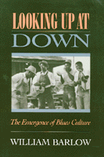

The evolution of the various strands of blues music
The evolution of the various strands of blues music


 The evolution of the various strands of blues music
The evolution of the various strands of blues music

|  |
Looking Up at DownThe Emergence of Blues CultureWilliam Barlowpaper EAN: 978-0-87722-722-9 (ISBN: 0-87722-722-5) |
"If you want to find your way back to the roots of the blues, this book is your ticket."
—Taj Mahal
More than just a history of a musical genre, Looking Up at Down traces the evolution of the various strands of blues music within the broader context of the culture on which it commented, and discusses its importance as a form of cultural resistance and identity for Afro-Americans. William Barlow explores the lyrics, describes the musical styles, and portrays the musicians and performers who created this uniquely American music. He describes how the blues sound—with its recognizable dissonance and African musical standards—and the blues text, which provided a bottom up view of American society, became bulwarks of cultural resistance.
Using rare recordings, oral histories, and interviews, Barlow analyzes how the blues was sustained as a form of Afro-American cultural resistance despite attempts by the dominant culture to assimilate and commercialize the music and exploit its artists.
"A masterwork.... [Barlow] includes all types of blues in his analysis, without losing sight of the music’s density, its humor, and its satire, when the blues get so bad that we are 'lookin’ up at down.'"
—Ruth A. Banes, Popular Music and Society
"Bill Barlow’s fine study is a major contribution to our understanding of blues. He carefully traces the music from its roots in the rural South to urban traditions in Memphis, St. Louis, and Chicago. Barlow’s broad portrait of the blues and his perceptive analysis make this study a classic."
—Bill Ferris, Director, Center for the Study of Southern Culture, The University of Mississippi
"...encyclopedic..."
—Publishers Weekly
"...a definitive work on black culture. The major value of the book is its exhaustive scope and its demonstration that blues continues African culture in America under new conditions. A rare jewel in the scholarship of Afro-American culture."
—Sterling D. Plumpp, University of Illinois at Chicago
Before the Blues
Part I: Rural Blues
Introduction
1. "I Been 'Buked and I Been Scorned": The Folk Roots of the Blues
2. "Everyday Seems Like Murder Here": Mississippi Delta Blues
3. "Po' Boy, Long Ways from Home": East Texas Blues
4. "Pickin' Low Cotton": Piedmont Blues
Part II: Urban Blues
Introduction
5. "Laughin' to Keep from Cryin'": Vaudeville Blues
6. "Chocolate to the Bone": Urban Blues in the South
7. "Stormy Monday": Urban Blues in the Southwest
8. "Goin' Down Slow": Urban Blues in the Midwest
9. "Looking Up at Down": Chicago Blues
Conclusion
Notes
General Index
Song Index
Permissions
William Barlow is Associate Professor in the Radio, Television, and Film Department of Howard University. A music programmer for alternative radio stations for more than fifteen years, he currently produces "Blue Monday" on WPFW-FM. He is also the author of Voice Over: The Making of Black Radio.
General Interest
African American Studies
© 2015 Temple University. All Rights Reserved. This page: http://www.temple.edu/tempress/titles/497_reg.html.